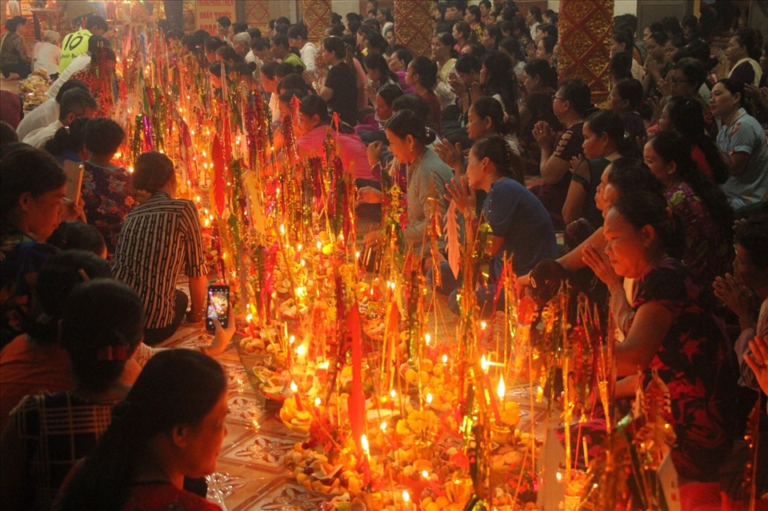

Sene Dolta mang bầu không khí trầm sâu và ấm áp, nơi các gia đình tưởng nhớ tổ tiên, gắn kết các thế hệ và làm nổi bật một vẻ đẹp văn hóa rất nhân văn của cộng đồng Khmer Nam Bộ.
Sene Dolta là lễ báo hiếu, tưởng nhớ ông bà tổ tiên trong văn hóa Khmer. Điểm đẹp của lễ không nằm ở sự hoành tráng mà ở chiều sâu tình cảm gia đình, lòng biết ơn và cảm giác sum họp rất đỗi gần gũi.
Với du khách, đây là một dịp đặc biệt để bước chậm lại và cảm nhận một phương diện khác của văn hóa miền Tây: không chỉ hào sảng và rộn ràng, mà còn rất sâu sắc, đằm và giàu lòng tri ân.

Mọi hoạt động đều xoay quanh sự tri ân, gặp gỡ và gắn bó giữa các thế hệ.
Nghi thức và bầu không khí tạo cảm giác trang trọng nhưng không xa cách.
Lễ hội cho thấy chiều sâu đạo lý rất đẹp trong đời sống cộng đồng Khmer.
Sene Dolta không cố gây ấn tượng bằng bề nổi. Điều đọng lại thường là cảm giác ấm, sâu và sự trân trọng dành cho tổ tiên, gia đình và cội nguồn văn hóa.
Ít lễ hội nào làm người xem cảm nhận rõ ý nghĩa của sum họp gia đình như Sene Dolta.
Mỗi nghi thức đều gắn với một hệ giá trị đạo lý và tín ngưỡng bền lâu.
Nét đẹp của lễ hội thường đến chậm nhưng ở lại rất lâu sau khi rời đi.
Hãy giữ nhịp tham quan nhẹ nhàng để phù hợp với tinh thần lắng sâu của lễ hội này.
Đừng vội chụp ảnh ngay, hãy cảm nhận bầu không khí trước.
Chính thái độ thành kính của cộng đồng là điều làm nên vẻ đẹp của lễ.
Bạn sẽ hiểu rõ hơn ý nghĩa của từng tập quán và lý do họ trân trọng ngày này.
Đó thường là lúc dư âm của lễ hội chạm đến rõ nhất.
Nếu bạn thấy website hữu ích, hãy ủng hộ một ly cà phê để nhóm có thêm động lực phát triển.
 Quét mã QR hoặc nhấn vào ảnh để ủng hộ.
Quét mã QR hoặc nhấn vào ảnh để ủng hộ.
Đánh giá từ du khách
Hãy chia sẻ cảm nhận của bạn về chiều sâu cảm xúc và nét đẹp cộng đồng của Sene Dolta nhé.